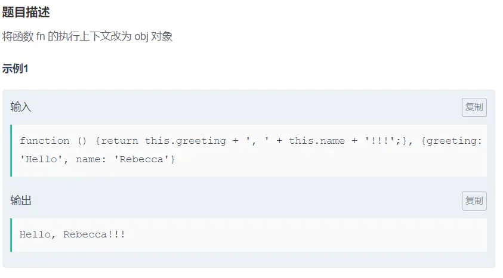

前言
牛客网的 45 道 JS 能力评测题个人觉得是非常好的 45 道 js 基础检测题,基本就是对自己的 JavaScript 基础做一个比较全面的评估,包括 if 语句、循环体、基础操作符、setInterval、setTimeout、流程控制、常用数组方法及 ES6 相关(解构、Map、Set、...等).之前我已经做过一遍了,我记得以前牛客网不支持 ES6 的写法,这两天花了点时间把所有题目又做了一遍,发现支持 ES6 了.这次每个题目我都尽力用了不同的方法实现,建议各位看官收藏,需要的时候方便查看.当然如果你有更好更新颖的实现方法,欢迎评论区留言交流.

我也把常用的数组方法和字符串方法贴在这里,可以自测掌握程度


1. 查找数组元素位置
1、查找数组元素位置

第一题比较简单,就直接上答案:
// 方法一:
function indexOf(arr, item) {
while (arr.length > 0) {
if (arr.pop() == item) return arr.length; //从数组中删除的元素(当数组为空时返回undefined).
}
return -1;
}// 方法二:
function indexOf(arr, item) {
return arr.indexOf(item);
}
indexOf([], 1);// 方法一
function indexOf(arr, item) {
if (Array.prototype.indexOf) {
// 判断浏览器是否支持indexOf方法
return arr.indexOf(item);
} else {
for (var i = 0; i < arr.length; i++) {
if (arr[i] === item) {
return i;
}
}
}
return -1;
}
// // 方法二
// function indexOf(arr, item) {·
// return arr.indexOf(item);
// } else {
// return -1;
// }
// }Array.prototype.indexOf 方法返回在数组中可以找到一个给定元素的第一个索引,如果不存在,则返回 -1.
语法:
arr.indexOf(searchElement) //查找searchElement元素在数组中的第一个位置
arr.indexOf(searchElement[, fromIndex = 0]) //从fromIndex开始查找searchElement元素在数组中的第一个位置还有另外一个查找字符串的方法String.prototype.indexOf()
str.indexOf(searchValue[, fromIndex])- searchValue:一个字符串表示被查找的值.
- fromIndex (可选):表示调用该方法的字符串中开始查找的位置.可以是任意整数.默认值为 0.如果 fromIndex <0 则查找整个字符串(如同传进了 0).如果 fromIndex>= str.length,则该方法返回 -1,除非被查找的字符串是一个空字符串,此时返回 str.length.
具体可以看看 MDN
// 直接使用 Array.prototype.indexOf()
const indexOf = (arr, item) => arr.indexOf(item);2、添加元素 (末尾添加)
2、添加元素 (末尾添加)

方法一:普通的 for 循环拷贝 + push
function append(arr, item) {
let resArr = [];
for (let i = 0; i < arr.length; i++) {
resArr.push(arr[i]);
}
resArr.push(item);
return resArr;
}方法二:使用 concat 将传入的数组或非数组值与原数组合并, 组成一个新的数组并返回
function append(arr, item) {
return arr.concat(item);
}方法三:使用 slice 浅拷贝 + push
function append(arr, item) {
let newArr = arr.slice(0); // slice(start, end)浅拷贝数组
newArr.push(item);
return newArr;
}方法四:...扩展运算符 如果不知道的,可以看看 ES6 的相关知识
//💯
function append(arr, item) {
let resArr = [...arr, item];
return resArr;
}3、移除数组中的元素 (返回原数组)
3、移除数组中的元素 (返回原数组)

这里需要注意理解题目,是直接操作原数组,所以不能出现 newArr
方法一:普通 for 循环 + splice
function removeWithoutCopy(arr, item) {
for (let i = arr.length; i >= 0; i--) {
if (arr[i] == item) {
arr.splice(i, 1);
}
}
return arr;
}方法二:方法一的另外一种写法
在这里要注意在删除掉一个元素时,要 i–,即删除这个元素后,其他元素位置往前移.
function removeWithoutCopy(arr, item) {
for (let i = 0; i < arr.length; i++) {
if (arr[i] === item) {
arr.splice(i, 1);
i--;
}
}
return arr;
}把第 3 题稍微变一下,看下一题
3. 移除数组中的元素 (返回新的数组)
4、移除数组中的元素 (返回新的数组)
移除数组 arr 中的所有值与 item 相等的元素.不要直接修改数组 arr,结果返回新的数组

方法一:filter 过滤
function remove(arr, item) {
return arr.filter((res) => {
return res != item;
});
}方法二:for 循环 + push
function remove(arr, item) {
let resArr = [];
for (let i = 0; i < arr.length; i++) {
if (arr[i] !== item) {
resArr.push(arr[i]);
}
}
return resArr;
}方法三:forEach+push(效率高于 for 循环)
//遍历数组 arr 当前元素不等于 item 则将当前元素 push 新数组
function remove(arr, item) {
let resArr = [];
arr.forEach((v) => {
if (v !== item) {
resArr.push(v);
}
});
return resArr;
}方法四:for 循环 + splice
function remove(arr, item) {
let resArr = arr.slice(0);
for (let i = 0; i < resArr.length; i++) {
if (resArr[i] == item) {
resArr.splice(i, 1);
i--;
}
}
return resArr;
}2. 数组求和
5、数组求和

方法一:普通 for 循环累加
function sum(arr) {
let res = 0;
for (let i = 0; i <= arr.length; i++) {
res += arr[i];
}
return res;
}方法二:forEach 循环累加
function sum(arr) {
let res = 0;
arr.forEach((value) => {
res += value;
});
return res;
}方法三:reduce
reduce() 方法接收一个函数作为累加器,数组中的每个值(从左到右)开始缩减,最终计算为一个值,具体可以看看 ES6 相关知识.
function sum(arr) {
return arr.reduce((pre, cur) => {
return pre + cur;
});
}方法四:eval
eval() 函数可计算某个字符串,并执行其中的的 JavaScript 代码.
function sum(arr) {
return eval(arr.join('+'));
}6、删除数组最后一个元素
6、删除数组最后一个元素

方法一:slice
function truncate(arr) {
return arr.slice(0, arr.length - 1);
}方法二:concat/slice+pop
function truncate(arr) {
let resArr = arr.concat();
// let resArr = arr.slice(0)
resArr.pop();
return resArr;
}7、添加元素 (开头添加)
7、添加元素 (开头添加)

concat/slice/arr.join().split(‘,’)+unshift
function prepend(arr, item) {
// let resArr = arr.slice(0);
// let resArr = arr.concat()
let resArr = arr.join().split(',');
resArr.unshift(item);
return resArr;
}8、删除数组第一个元素
8、删除数组第一个元素

与第 7 题大同小异,玩不出太多花样,如你有其他好玩的方法,欢迎留言
function curtail(arr) {
let resArr = arr.slice(0);
resArr.shift();
return resArr;
}const curtail = (arr) => arr.slice(1);9、合并数组
9、合并数组

方法很多,欢迎大佬们留言评论
方法一:concat
function concat(arr1, arr2) {
let resArr = arr1.concat(arr2);
return resArr;
}方法二:...扩展运算符
function concat(arr1, arr2) {
let resArr = [...arr1, ...arr2];
return resArr;
}方法三:slice+push.apply
function concat(arr1, arr2) {
let resArr = arr1.slice(0);
[].push.apply(resArr, arr2);
return resArr;
}10、添加元素 (指定位置添加)
10、添加元素 (指定位置添加)

方法一:先复制前 0~index 个元素,将 item 元素插入之后,再拼接 index 之后的元素
function insert(arr, item, index) {
let resArr = arr.slice(0, index);
resArr.push(item);
resArr = resArr.concat(arr.slice(index));
return resArr;
}方法二:使用 splice 方法插入(效率较高)
function insert(arr, item, index) {
let resArr = arr.slice(0); //
resArr.splice(index, 0, item);
return resArr;
}方法三:push.apply+splice
function insert(arr, item, index) {
let resArr = [];
[].push.apply(resArr, arr);
resArr.splice(index, 0, item);
return resArr;
}11、计数
11、计数

方法一:普通 for 循环
function count(arr, item) {
let reSCount = 0;
for (let i = 0; i <= arr.length; i++) {
if (arr[i] === item) {
reSCount++;
}
}
return reSCount;
}方法二:forEach
function count(arr, item) {
let resCount = 0;
arr.forEach((v) => {
if (v == item) {
resCount++;
}
});
return resCount;
}方法三:filter
function count(arr, item) {
let res = arr.filter((v) => {
return v === item;
});
return res.length;
}方法四:map(效率高于 filter)
function count(arr, item) {
let resCount = 0;
arr.map((v) => {
if (v === item) {
resCount++;
}
});
return resCount;
}map 函数和 filter 有点像,但是 map 是对数组中的所有元素进行复核函数条件的处理,最终得到的是一个新数组,元素个数不变.
filter 函数虽然也是返回一个新数组,但是元素的个数等于复核函数条件的元素总和.
方法五:reduce
function count(arr, item) {
let res = arr.reduce((init, curr) => {
//如果当前置等于item,该函数值加一
return curr === item ? init + 1 : init;
}, 0);
return res;
}12、查找重复元素
12、查找重复元素

方法一:for/for in/+sort 先进行排序,然后判断排序之后的前一个数据是否等于后一个数据,如果是且结果数组没有这个元素
//for 运行时间:1596ms 占用内存:77772k
function duplicates(arr) {
let resArr = [];
arr.sort();
for (let i = 0; i < arr.length; i++) {
if (arr[i] == arr[i - 1] && resArr.indexOf(arr[i]) == -1) {
resArr.push(arr[i]);
}
}
return resArr;
}
//for in 运行时间:1132ms占用内存:77868k
function duplicates(arr) {
let resArr = [];
arr.sort();
for (i in arr) {
if (arr[i] == arr[i - 1] && resArr.indexOf(arr[i]) == -1) {
resArr.push(arr[i]);
}
}
return resArr;
}方法二:forEach 利用索引判断是否重复(使用了两次)
// 运行时间:1184ms 占用内存:77772k
function duplicates(arr) {
var resArr = [];
arr.forEach((v) => {
//判断原数组是否有重复数据
//判断结果数组是否已经具有该数据
if (arr.indexOf(v) != arr.lastIndexOf(v) && resArr.indexOf(v) == -1) {
resArr.push(v);
}
});
return resArr;
}方法三:reduce 先判断数组中元素出现的次数,如果大于 1 并且结果数组之前无此元素,则将这个元素放到结果数组中
// 运行时间:1129ms 占用内存:77776k
function duplicates(arr) {
let b = [];
let resArr = [];
for (let i = 0; i < arr.length; i++) {
bbbb[i] = arr.reduce((init, curr) => {
//如果当前置等于item,该函数值加一
return curr === arr[i] ? init + 1 : init;
}, 0);
if (bbbb[i] > 1 && resArr.indexOf(arr[i]) === -1) {
resArr.push(arr[i]);
}
}
return resArr;
}13、求二次方
13、求二次方

方法一:for/forEach
// 运行时间:1466ms 占用内存:77772k
function square(arr) {
var res = [];
for (var i in arr) {
res.push(arr[i] * arr[i]);
}
return res;
}
// forEach 运行时间:1130ms 占用内存:77772k
function square(arr) {
var resArr = [];
arr.forEach((e) => {
resArr.push(e * e);
});
return resArr;
}方法二:map
// 运行时间:1433ms 占用内存:78004k
function square(arr) {
//let resArr = arr.slice(0);
let resArr = arr.map((e, index, array) => {
return eeee * e;
});
return resArr;
}14、查找元素位置
14、查找元素位置

方法一: for
//运行时间:1139ms 占用内存:77772k
function findAllOccurrences(arr, target) {
let resArr = [];
for (let i = 0; i < arr.length; i++) {
if (arr[i] === target) {
resArr.push(i);
}
}
return resArr;
}方法二:forEach
// 运行时间:1135ms 占用内存:77776k
function findAllOccurrences(arr, target) {
let resArr = [];
arr.forEach((v, index) => {
if (v === target) {
resArr.push(index);
}
});
return resArr;
}15、避免全局变量
15、避免全局变量

原代码:
function globals() {
myObject = {
name: 'Jory',
};
return myObject;
}修复:
function globals() {
let myObject = {
name: 'Jory',
};
return myObject;
}16、正确的函数定义
16、正确的函数定义

原代码:
function functions(flag) {
if (flag) {
function getValue() {
return 'a';
}
} else {
function getValue() {
return 'b';
}
}
return getValue();
}修复:else 中的语句相当于将 if 中的 function 重写,因此无论 flag 为何值,返回的方法始终为重写后的方法.将方法赋值给一个变量,方法就不会被重写,因此才能得到正确的结果.并且只能用 var 声明.
function functions(flag) {
if (flag) {
var getValue = function () {
return 'a';
};
} else {
var getValue = function () {
return 'b';
};
}
return getValue();
}17、正确的使用 parseInt
17、正确的使用 parseInt

原代码:
function parse2Int(num) {
return parseInt(num);
}修复:parseInt(string, radix) 函数可解析一个字符串,并返回一个整数.参数 radix 表示要解析的数字的基数.该值介于 2 ~ 36 之间. 如果省略该参数或其值为 0,parseInt() 会根据 string 来判断数字的基数. 举例,如果 string 以 “0x” 开头,parseInt() 会把 string 的其余部分解析为十六进制的整数.如果 string 以 0 开头,那么 ECMAScript v3 允许 parseInt() 的一个实现把其后的字符解析为八进制或十六进制的数字.如果 string 以 1 ~ 9 的数字开头,parseInt() 将把它解析为十进制的整数. 而本题则是要求解析为十进制的整数.
function parse2Int(num) {
return parseInt(num, 10);
}注意:
只有字符串中的第一个数字会被返回.
如果字符串的第一个字符不能被转换为数字,那么 parseFloat() 会返回 NaN. 3. 如果参数 radix 小于 2 或者大于 36,则 parseInt() 将返回 NaN.
18、完全等同
18、完全等同

function identity(val1, val2) {
if (val1 === val2) {
return true;
} else {
return false;
}
}19、计时器
19、计时器

function count(start, end) {
//立即输出第一个值
console.log(start++);
var timer = setInterval(function () {
if (start <= end) {
console.log(start++);
} else {
clearInterval(timer);
}
}, 100);
//返回一个对象
return {
cancel: function () {
clearInterval(timer);
},
};
}setInterval(code,millisec) 方法可按照指定的周期(以毫秒计)来调用函数或计算表达式.
code 是要调用的函数或要执行的代码串,millisec 是周期性执行或调用 code 之间的时间间隔,以毫秒计.
setInterval() 方法会不停地调用 code 函数,直到 clearInterval() 被调用或窗口被关闭.由 setInterval() 返回的 ID 值可用作 clearInterval() 方法的参数. clearInterval() 方法可取消由 setInterval() 设置的 timeout,其中的参数必须是由 setInterval() 返回的 ID 值.
20、流程控制
20、流程控制

function fizzBuzz(num) {
if (num % 3 == 0 && num % 5 == 0) {
return 'fizzbuzz';
} else if (num % 3 == 0) {
return 'fizz';
} else if (num % 5 == 0) {
return 'buzz';
} else if (num == null || typeof num != 'number') {
return false;
} else {
return num;
}
}21、函数传参
21、函数传参

方法一:apply/call
function argsAsArray(fn, arr) {
return fn(arr[0], arr[1], arr[2]);
}
用apply;
function argsAsArray(fn, arr) {
return fn.apply(fn, arr);
}
//或者
function argsAsArray(fn, arr) {
return fn.apply(this, arr);
}
用call;
function argsAsArray(fn, arr) {
return fn.call(fn, arr[0], arr[1], arr[2]);
}
//或者
function argsAsArray(fn, arr) {
return fn.call(this, arr[0], arr[1], arr[2]);
}function.apply(newObj[, argsArray]) 方法可以修改指定函数的调用对象.function 是调用对象将被修改的函数,newObj 是函数的新调用对象,argsArray 是传递给 function 函数的参数,数组或者 arguments 对象.
apply 方法是将传递给函数的参数放入一个数组中,传入参数数组即可.
function.call(newObj[, arg1[, arg2[, [,…argN]]]]) 方法的作用和 apply() 方法类似,只有一个区别,就是 call() 方法接受的是若干个参数的列表,而 apply() 方法接受的是一个包含多个参数的数组.
方法二:...扩展运算符
function argsAsArray(fn, arr) {
return fn(...arr);
}22、函数的上下文
22、函数的上下文

这个题目考察的是改变 this 指向
//apply
function speak(fn, obj) {
return fn.apply(obj);
}
//call
function speak(fn, obj) {
return fn.call(obj);
}
//bind
function speak(fn, obj) {
return fn.bind(obj)();
}23、返回函数
23、返回函数

function functionFunction(str) {
return (f = function (obj) {
return str + ', ' + obj;
});
}24、使用闭包
24、使用闭包

function makeClosures(arr, fn) {
let result = [];
for (let i of arr) {
result.push(() => {
return fn(i);
});
}
return result;
}
// 也可以换成forEach25、二次封装函数
25、二次封装函数

因为没有要求函数内部 this 指向和作用域,所以可以不用 call 和 apply 方法.
function partial(fn, str1, str2) {
return (result = function (str3) {
return fn(str1, str2, str3);
});
}26、使用 arguments
26、使用 arguments

方法一:eval
function useArguments() {
let arr = Array.prototype.slice.call(arguments); //把arguments类数组转化为数组
return eval(arr.join('+')); //求和
}方法二:reduce+call 组合
function useArguments() {
let result = Array.prototype.reduce.call(arguments, function (a, b) {
return a + b;
});
return result;
}27、使用 apply 调用函数
27、使用 apply 调用函数

21 题已经讲过,不再赘述
function callIt(fn) {
return fn.apply(this, [].slice.call(arguments, 1));
}28、二次封装函数
28、二次封装函数

注意与 25 题的要求区别.入门级别,不多说,是个人都会
function partialUsingArguments(fn) {
//先获取p函数第一个参数之后的全部参数
var args = [].slice.call(arguments, 1);
//声明result函数
return (result = function () {
//使用concat合并两个或多个数组中的元素
return fn.apply(this, args.concat([].slice.call(arguments)));
});
}29、柯里化
29、柯里化

柯里化是把接受多个参数的函数变换成接受一个单一参数 (最初函数的第一个参数) 的函数,并且返回接受余下的参数且返回结果的新函数的技术.
function curryIt(fn) {
var args = [];
var result = function (arg) {
args.push(arg);
if (args.length < fn.length) {
return result;
} else return fn.apply(this, args);
};
return result;
}30、或运算
30、或运算

function or(a, b) {
return a || b;
}31、且运算
31、且运算

function and(a, b) {
return a && b;
}32、模块
32、模块

function createModule(str1, str2) {
let obj = {
greeting: str1,
name: str2,
sayIt: function () {
return obj.greeting + ', ' + obj.name;
},
};
return obj;
}33、二进制转换 (十进制转二进制)
33、二进制转换 (十进制转二进制)

function valueAtBit(num, bit) {
let res = num.toString(2);
return sresresresre[res.length - bitbitbitbit];
}NumberObject.toString(radix) 方法可把一个 Number 对象转换为一个字符串,并返回数字的字符串表示.radix 表示数字的基数,为 2 ~ 36 之间的整数.若省略该参数,则默认使用基数 10.例如,当 radix 为 2 时,NumberObject 会被转换为二进制值表示的字符串.
当调用该方法的对象不是 Number 时抛出 TypeError 异常.
通过 num.toString(2) 能直接将 num 转换为 2 进制数格式的字符串,利用下标就能将对应值取出来.题目返回的数字是从右往左,因此下标为倒数.
34、二进制转换 (二进制转十进制)
34、二进制转换 (二进制转十进制)

function base10(str) {
return parseInt(str, 2);
}35、二进制转换 (十进制转 8 位二进制)
35、二进制转换 (十进制转 8 位二进制)

function convertToBinary(num) {
let res = num.toString(2);
while (res.length < 8) {
res = '0' + res;
}
return res;
}36、乘法
36、乘法

本题要注意题目要求,我们需要考虑精度,且保证以小数点后位数多的为准.以下写法是不能通过的
// 这种写法是通不过的
function multiply(a, b) {
return aaaa * b;
}正解:
function multiply(a, b) {
// 先将数字转换为字符串
let str1 = a.toString();
let str2 = b.toString();
// 获取两个数的小数位数
let lenA = str1.indexOf('.') == -1 ? 0 : str1.length - str1.indexOf('.') - 1;
let lenB = str2.indexOf('.') == -1 ? 0 : str2.length - str2.indexOf('.') - 1;
// 比较两数的精度/位数,精度大的作为结果数精度
let len = Math.max(lenA, lenB);
// 运算结果
let result = parseFloat(aaaa * b).toFixed(len);
return result;
}- toFixed(num):
toFixed()方法可把 Number 四舍五入为指定小数位数的数字; 参数 num: 代表小数位数;
let num = 5.56789; num.toFixed(2); ==>5.57
- parseFloat(string):
parseFloat()函数可解析一个字符串,并返回一个浮点数;参数 string 可为数字可为字符串,当参数为字符串时,判断个字符是否是数字,如果是,则对字符串进行解析,直到到达数字的末端为止,然后以数字返回该数字,如果不是,返回 NAN;
parseFloat("43ar4s2");==>43
parseFloat("qwar4s2");==>NAN
37、改变上下文
37、改变上下文

前面有讲过,不再赘述
function alterContext(fn, obj) {
//return fn.call(obj);
//return fn.apply(obj);
return fn.bind(obj)();
}38、批量改变对象的属性
38、批量改变对象的属性

function alterObjects(constructor, greeting) {
constructor.prototype.greeting = greeting;
}prototype 属性可以向对象添加属性和方法. 这是原型链的知识:当查找一个对象的方法或者是属性时,首先会在该对象中寻找,如果找到则返回如果实例对象自身不存在该属性,则沿着原型链往上一级查找,找到时则输出,不存在时,则继续沿着原型链往上一级查找,直至最顶级的原型对象 Object.prototype,如还是没找到,则返回 undefined
将 constructor 的所有实例的 greeting 属性指向给定的 greeting 变量,只需要在 constructor 的原型上面添加 greeting 属性,并指定值. 关于原型链可以看看我之前的文章:「前端料包」深入理解 JavaScript 原型和原型链
39、属性遍历
39、属性遍历

方法很多凡是有遍历功能的方法都可以
方法一:for in 循环
//运行时间:1148ms 占用内存:77864k
function iterate(obj) {
let result = [];
for (let key in obj) {
if (obj.hasOwnProperty(key)) {
result.push(key + ': ' + objobjobjobj[keykeykeykey]); //使用obj.key部分代码不能通过
}
}
return result;
}所有继承了 Object 的对象都会继承到 hasOwnProperty() 方法.obj.hasOwnProperty(prop)方法会返回一个布尔值,指示对象 obj 自身属性中是否具有指定的属性 prop .这个方法可以用来检测一个对象是否含有特定的自身属性,并忽略掉那些从原型链上继承到的属性.
方法二:map
//运行时间:1133ms 占用内存:77828k
function iterate(obj) {
return Object.getOwnPropertyNames(obj).map((key) => {
return key + ': ' + objobjobjobj[keykeykeykey];
});
}Object.getOwnPropertyNames()方法返回一个由指定对象的所有自身属性的属性名(包括不可枚举属性但不包括 Symbol 值作为名称的属性)组成的数组. 方法三:forEach
//运行时间:1173m 占用内存:77872k
function iterate(obj) {
let arr = Object.keys(obj);
let resArr = [];
arr.forEach((item) => {
resArr.push(item + ': ' + objobjobjobj[itemitemitemitem]);
});
return resArr;
}最后 5 题大部分可以用正则表达式实现,关于正则表达式可以看看正则表达式不要背
40、判断是否包含数字
40、判断是否包含数字

方法一:正则 test/match
function containsNumber(str) {
// return /\d/.test(str);
return !!str.match(/\d/g);
}方法二:遍历
function containsNumber(str) {
for (let i = 0; i < 10; i++) {
if (str.indexOf(i) != -1) {
return true;
}
}
return false;
}当然如果想折腾,还有纯 js 判断:
方法三:for 循环 + charCodeAt()
function containsNumber(str) {
let res = str.split('');
for (let i = 0; i < res.length; i++) {
let temp = resresresres[i].charCodeAt();
if (temp >= 48 && temp <= 57) {
return true;
}
}
return false;
}方法四:for 循环 + Number()
function containsNumber(str) {
let res = str.split('');
for (let i = 0; i < res.length; i++) {
let temp = Number(resresresres[i]);
if (temp) {
return true;
}
}
return false;
}41、检查重复字符串
41、检查重复字符串

function containsRepeatingLetter(str) {
return /([a-zA-Z])\1/.test(str);
}在正则表达式中,利用 () 进行分组,使用斜杠加数字表示引用,1 就是引用第一个分组,2 就是引用第二个分组.将 [a-zA-Z] 做为一个分组,然后引用,就可以判断是否有连续重复的字母.
方法二:字符串方法
function containsRepeatingLetter(str) {
let reg = /[a-zA-Z]/;
for (let i = 0; i < str.length; i++) {
if (str.charAt(i) == str.charAt(i + 1) && reg.test(str[i])) {
return true;
}
}
return false;
}42、判断是否以元音字母结尾
42、判断是否以元音字母结尾

首先确定元音集合[a,e,i,o,u],然后是以元音结尾,加上 \$ ,最后通配大小写,加上 i.
function endsWithVowel(str) {
return /[a,e,i,o,u]$/i.test(str);
//或者
// return /(a|o|e|i|u)$/gi.test(str);
}或者简单粗暴:
function endsWithVowel(str) {
return str && 'aeiouAEIOU'.indexOf(str[str.length - 1]) > -1;
}43、获取指定字符串
43、获取指定字符串

function captureThreeNumbers(str) {
//声明一个数组保存匹配的字符串结果
let arr = str.match(/\d{3}/);
//如果arr存在目标结果,则返回第一个元素,即最早出现的目标结果
if (arr) {
return arr[0];
} else {
return false;
}
}44、判断是否符合指定格式
44、判断是否符合指定格式

function matchesPattern(str) {
return /^\d{3}-\d{3}-\d{4}$/.test(str);
}本题需要注意格式,开头 ^ 和结尾 $ 必须加上来限定字符串,3 个数可表示为 \d{3} ,4 个数则为 \d{4} ,{n} 表示前面内容出现的次数.正则表达式可写作 /^\d{3}-\d{3}-\d{4}$/ ,有相同部分 \d{3}- ,因此也可写作 /^(\d{3}-){2}\d{4}$/ .
45、判断是否符合 USD 格式
45、判断是否符合 USD 格式

function isUSD(str) {
return /^\$\d{1,3}(,\d{3})*(\.\d{2})?$/.test(str);
}? 匹配前面一个表达式 0 次或者 1 次.等价于 {0,1}.
例如,/e?le?/ 匹配 ‘angel’ 中的 ‘el’,和 ‘angle’ 中的 ‘le’
(注意第二个 ? 前面的匹配表达式是 e 而不是 le) 以及 ‘oslo’ 中的’l’.
如果紧跟在任何量词 *、 +、? 或 {} 的后面,将会使量词变为非贪婪的(匹配尽量少的字符),和缺省
使用的贪婪模式(匹配尽可能多的字符)正好相反.
例如,对 “123abc” 应用 /\d+/ 将会返回 “123”,如果使用 /\d+?/,那么就只会匹配到 “1”.
还可以运用于向前断言 正向肯定查找 x(?=y) 和 正向否定查找x(?!y) .
* 匹配前一个表达式 0 次或多次.等价于 {0,}.
例如,/bo*/会匹配 “A ghost boooooed” 中的 ‘booooo’ 和 “A bird warbled” 中的 ‘b’,
但是在 “A goat grunted” 中将不会匹配任何东西.
. (小数点)匹配 除了换行符 \n之外的任何单个字符.
例如, /.n/将会匹配”nay, an apple is on the tree”中的’an’和’on’, 但是不会匹配 ‘nay’.